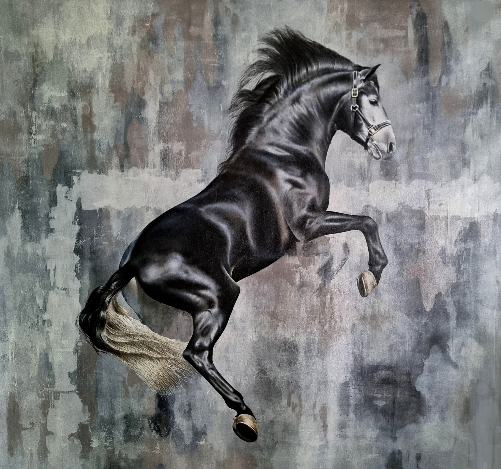
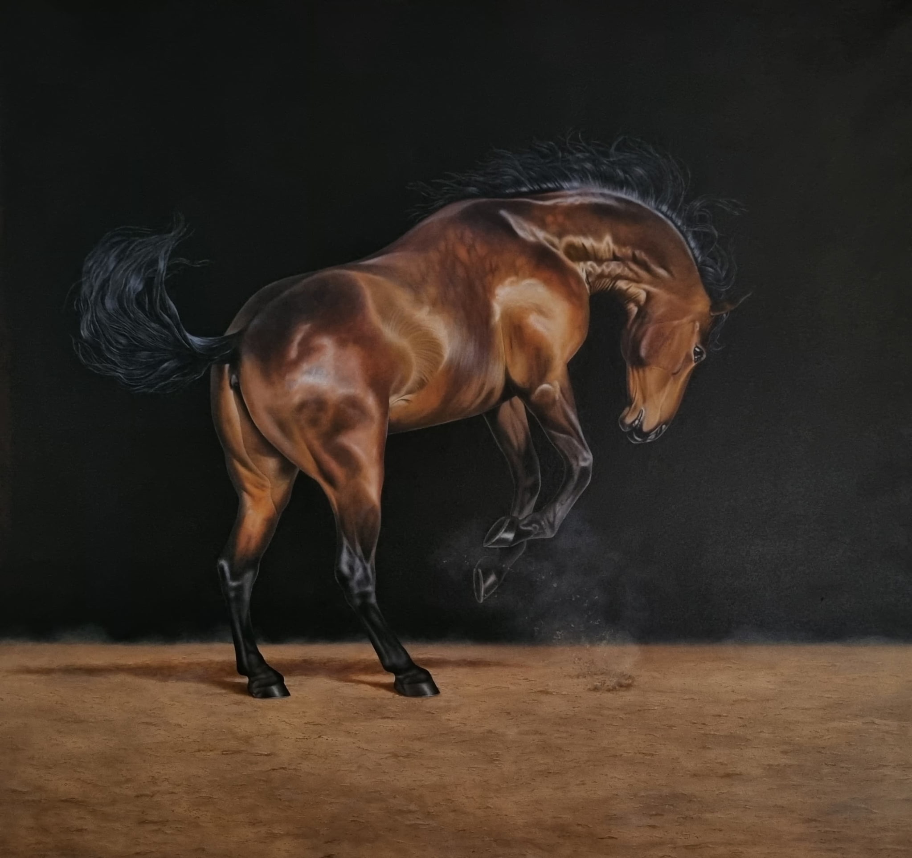
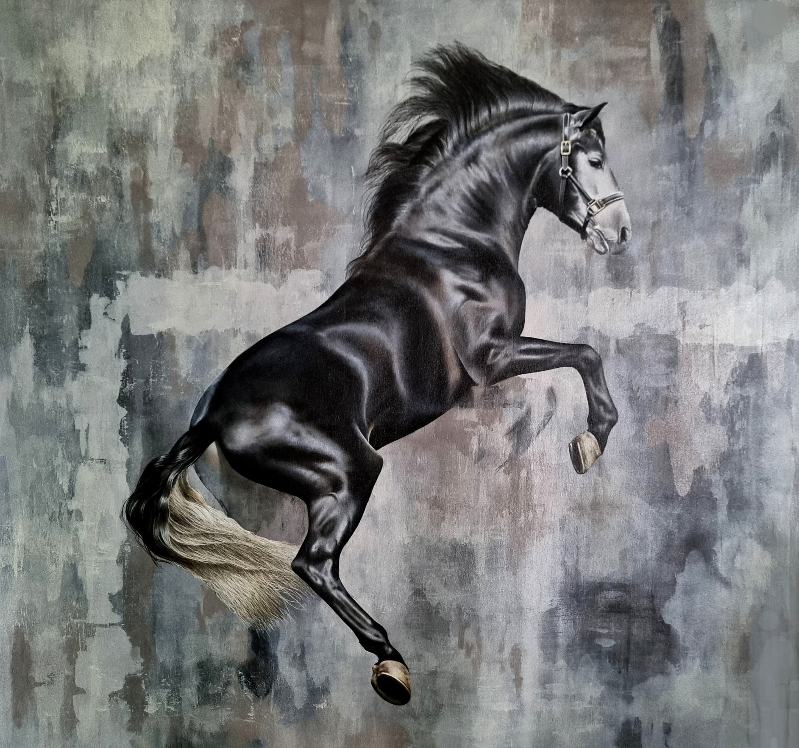
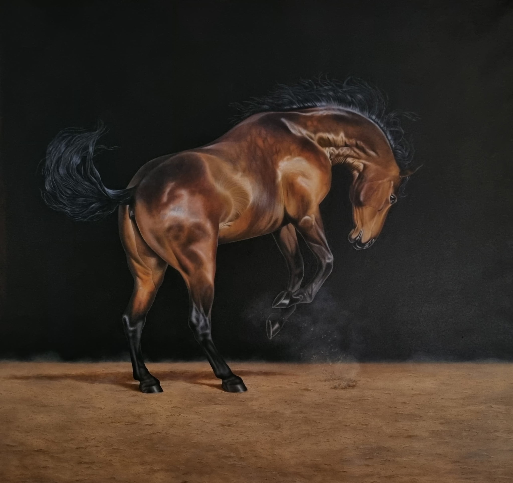

Born in Caracas on November 23, 1988. From a young age, he always showed interest in pencils and crayons that allowed him to draw and paint, but it was at the age of 12 that he first came into contact with brushes and acrylics with the help of the visual artist and teacher Arturo Mujica, at the Jacobo Borges Museum.
There, Leonel was in class with other children his age, replicating still lifes with watercolor crayons, but he wanted to go further… and boldly asked the teacher to paint on canvas in the adult class. Given Mujica's skill and pursuit of perfection, he agreed, and that was the beginning of the story of the "horse painter," as he began to be known in his community.
The homework of adolescence partially distanced him from art until, as an adult, he began working in a marquetry shop. Once again, he was exposed to the artist's own materials and contact with them. Unintentionally, he reconnected with his passion. He learned and absorbed, and it was at that moment that González decided to devote himself completely to painting, leaving marquetry and other crafts behind. He began a process of study and research, also mingling with artists and critics with whom he further refined his technique.
Throughout his career, artist Leonel González has used acrylic as the sole medium to convey his artistic vision. Followers like the big leaguers: Oswaldo Guillen, Omar Vizquel, Miguel Cabrera and Victor Davalillo , whom I portray for charity purposes after they signed the work. Most of his works can be seen at the Sepia Gallery. This artist is a must-see… he has a long way to go and is sure to amaze us with his work.
“Sometimes I escape and do other things, it's a way to test my skills and indulge a certain whim, but then I return to my thing... Horses.”


 


